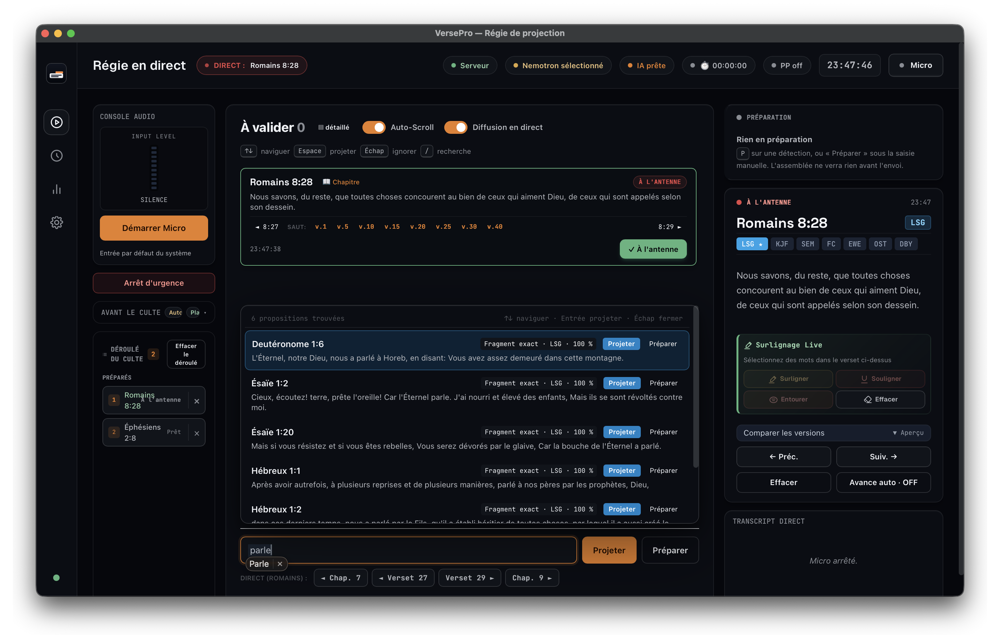
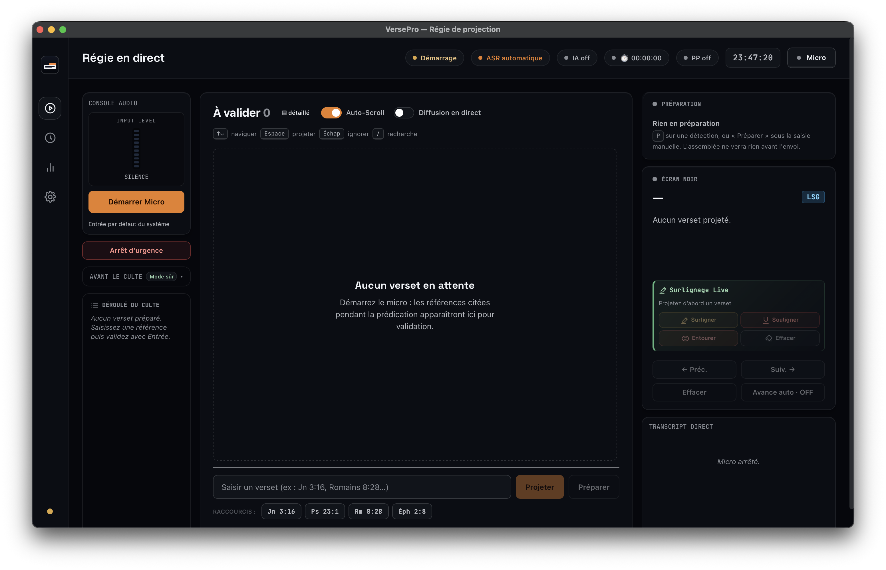
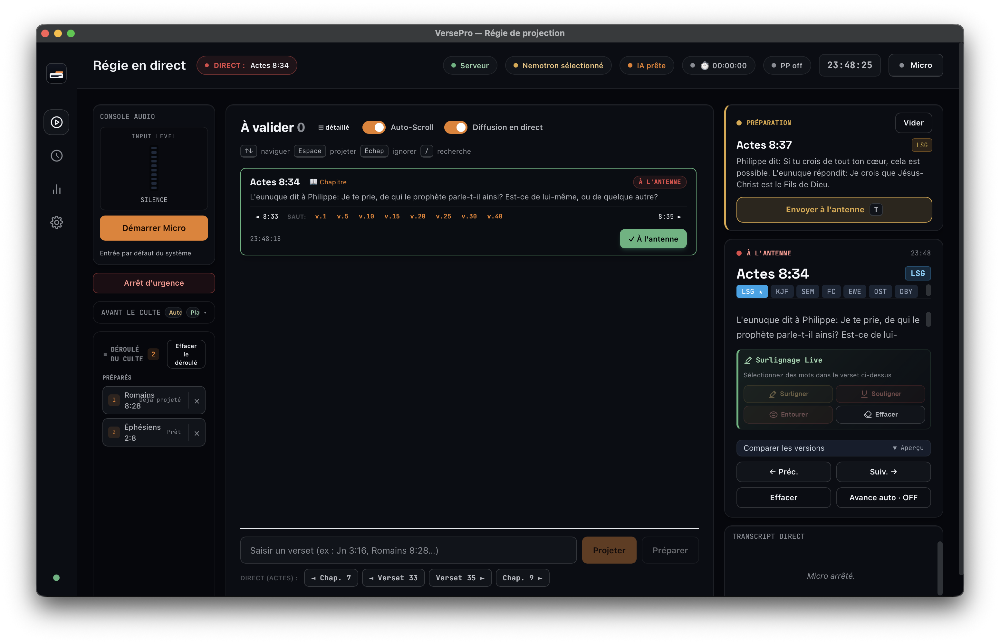
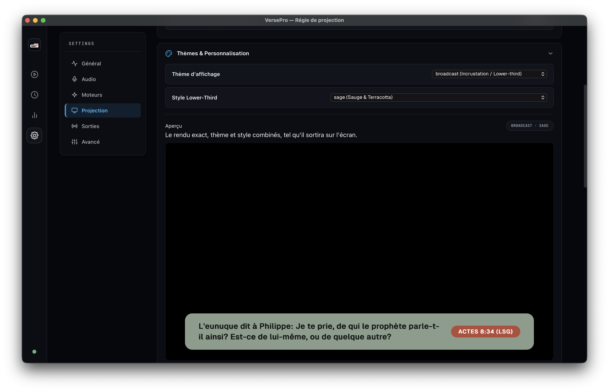
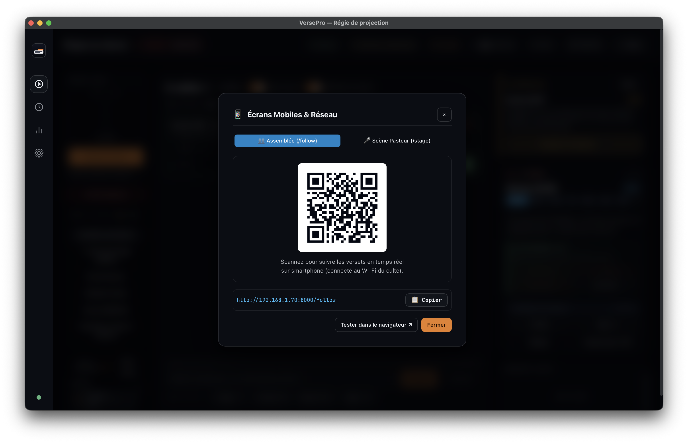

Pour l'équipe média et les régisseurs bénévoles.
Les gestes essentiels avant le culte, les réflexes en direct et la procédure
d'urgence, vérifiés dans l'application actuelle.

Ouvrez la régie, puis avancez de gauche à droite. Ne démarrez le micro qu'après le contrôle avant direct.

1 4 3 2La file centrale est la zone de décision. Le déroulé reste à gauche ; l'aperçu et ce qui est réellement à l'antenne restent à droite.
| Situation | Ce que fait VersePro | Réflexe régisseur |
|---|---|---|
| Référence claire | Le parser explicite ajoute le passage à la file. | Relire, puis Projeter. En mode automatique, surveiller aussitôt l'écran. |
| Avancer ou reculer | Jusqu'à dix versets voisins apparaissent sous la recherche. | Cliquer sur le numéro voulu. L'envoi est immédiat. |
| Paraphrase ou récit | L'index local ou l'IA peut proposer un passage. Une suggestion peut être absente ou imparfaite. | Lire le texte biblique avant toute projection. |
| Recherche urgente | Suggestions locales dès deux caractères ; sémantique à partir de deux mots. | ↑ ↓ puis Entrée, ou cliquer sur Projeter. |
| Verset planifié | La référence est conservée dans le déroulé à gauche. | Cliquer sur sa ligne pour l'envoyer. |
| ProPresenter hors ligne | La régie affiche « Projection locale active ». | Continuer avec l'Écran Secours. |
Une suggestion n'est jamais une certitude. Le badge sémantique signale une piste de recherche, pas une validation théologique ni une référence sûre.
Ouvrir la palette biblique unifiée.
Placer le curseur dans la recherche manuelle.
Naviguer dans la file ou les suggestions.
Projeter la carte active. Dans la recherche, Entrée projette la sélection.
Monter la détection sélectionnée dans l'aperçu.
Envoyer l'aperçu à l'antenne.
Rejeter la carte active ; dans la recherche, fermer les suggestions.
Revenir à la projection précédente, hors champ de saisie.
Il interdit la diffusion et l'avance automatiques. Chaque référence exige un geste humain. Activer « Diffusion en direct » désactive ce mode.

Le bouton Préparer charge l'aperçu. Il n'ajoute pas automatiquement la référence au déroulé. Dans la recherche, Entrée projette par défaut.
Les sorties navigateur locales sont la voie de secours universelle. Le QR existe dans l'interface, mais l'accès distant demande encore une évolution du serveur desktop.


| Usage | Adresse ou source | État |
|---|---|---|
| Console opérateur | Application VersePro | Opérationnel |
| Écran public local | http://127.0.0.1:17871/output | Même ordinateur |
| Retour scène local | http://127.0.0.1:17871/stage | Même ordinateur |
| OBS / vMix | http://127.0.0.1:17871/obs?theme=lower-third&bg=transparent | Source navigateur |
| NDI | Source VersePro | Optionnel |
| Assemblée / scène distante | /follow et /stage par IP locale | Expérimental |
Dans l'application desktop 2.1.8, le backend écoute sur 127.0.0.1. Remplacer cette adresse par l'IP du PC ou scanner le QR ne suffit pas encore pour un téléphone. Le partage mobile sera fiable après livraison d'un listener LAN séparé et protégé par jeton.